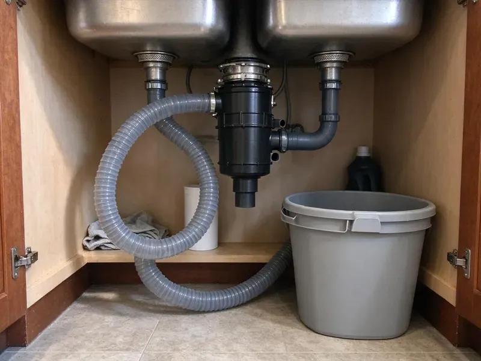

Grease Trap Cleaning in New Britain, CT
GLV Plumbing provides professional grease trap cleaning throughout New Britain, CT, preventing blockages and keeping a healthy plumbing system.
- Prevent Clogs
- Service Logs Every Visit
- Upfront Pricing
- Scheduled Maintenance Plans

Professional Grease Trap Cleaning Available in New Britain, CT.
Call GLV Plumbing today for professional grease trap cleaning and maintenance.
Professional Grease Trap Cleaning in New Britain, CT by GLV Plumbing
GLV Plumbing helps food service businesses stay ahead of pretreatment requirements with regular cleaning and clear service records. Our crews work early mornings or late nights so cleaning never interrupts service.
Our expertise includes:
- Service manifests and logs for municipal FOG programs
- High-pressure jetting for FOG removal
- Baffle, tee and flow control inspection on every visit

Additional Kitchen Plumbing Services in New Britain, CT
Our kitchen plumbing services in New Britain, CT cover sinks, disposals, dishwashers, and grease traps so your kitchen stays clean, safe, and fully functional.


Customers
Why Choose GLV Plumbing for Grease Trap Cleaning in New Britain, CT?
A full grease trap lets grease escape into the sewer, where it hardens and causes blockages and fines. Regular cleaning keeps your trap working and your kitchen up to code.
- Code Compliance, Many cities, including New Britain, have detailed plumbing codes and health department regulations regarding grease trap maintenance for commercial establishments.
- Flexible Scheduling, We clean before opening or after close so your kitchen never gives up service time.
- Extended Lifespan, Proper maintenance helps lengthen the working life of your grease trap and connected plumbing systems.
Citywide Coverage
We understand that commercial plumbing issues can't wait, which is why our technicians are positioned to offer complete grease trap cleaning coverage across all of New Britain, ensuring fast response times.
Experienced Team
Our plumbing technicians are highly trained and experienced in all aspects of grease trap cleaning and maintenance. They understand the nuances of different trap sizes and types, from small under-sink units to large outdoor interceptors.
Safety-First Approach
Grease trap waste is hauled and disposed of at approved facilities according to regulations. We never dump waste into the sewer or onto the soil.
Trusted Certified New Britain Plumbing Services Professionals
At GLV Plumbing, we take pride in providing licensed, certified plumbing services throughout New Britain, CT. Backed by leading industry credentials, our experienced plumbers combine technical skill with genuine customer care. Whether it is repair, installation, or maintenance, we follow strict safety and quality standards to deliver long-lasting results you can trust.
Call Us Now PHCC Plumbing Contractor Recognition
PHCC Plumbing Contractor Recognition Better Business Bureau (BBB) Accreditation
Better Business Bureau (BBB) Accreditation Angi Certified Pro
Angi Certified Pro ISO 9001 Quality Management Certification
ISO 9001 Quality Management CertificationReliable Grease Trap Cleaning Services in New Britain, CT
Compliance & Documentation in New Britain
Many local and state regulations in Connecticut require businesses to maintain their grease traps and provide documentation of service. GLV Plumbing not only cleans your grease trap but also helps you maintain proper service records. We can provide documentation of pumping and disposal, helping your New Britain business stay compliant with environmental and health department requirements. This service reduces your risk of non-compliance penalties.

Cost-Effective Grease Trap Solutions in New Britain, CT
GLV Plumbing offers fair and transparent pricing for all grease trap cleaning services in New Britain, CT. We provide upfront estimates before any work begins, ensuring there are no surprises. Investing in regular, professional cleaning is significantly more cost-effective than dealing with emergency drain repairs, fines from health departments, or business closures due to plumbing failures.
Large Outdoor Grease Interceptor Cleaning in New Britain
For larger establishments, outdoor grease interceptors are critical components of the plumbing system. These large tanks collect significant amounts of FOG and sediment. Our team has the specialized equipment and experience to effectively clean and maintain these large interceptors in New Britain, ensuring they function correctly and comply with environmental regulations. Proper cleaning prevents overflow into the public sewer system, which can result in significant fines.
Odor Control and Trap Inspections in New Britain
Persistent odors usually point to a trap that is overdue, a missing seal or a damaged baffle. We inspect gaskets, lids and vent connections during every cleaning. If we find damage, we explain the issue and offer repair options. Sealing problems early keeps odors out of your kitchen and dining room. It also prevents grease from bypassing the trap completely.
Scheduled Grease Trap Maintenance in New Britain
Preventative maintenance is key to avoiding emergency grease trap issues. GLV Plumbing offers customized scheduled cleaning plans for properties in New Britain, based on usage and trap size. Regular service supports continuous compliance, reduces the risk of expensive emergency repairs, and extends the lifespan of your plumbing infrastructure. We work with you to find a convenient schedule that minimizes disruption to your operations.
Indoor Grease Trap Cleaning in New Britain
Small hydromechanical traps under sinks fill quickly in busy kitchens and often need cleaning every few weeks. We remove the lid, pump or hand-scoop the grease and solids, and scrape the baffles. We check the gasket, flow control fitting and inlet for damage. Then we reassemble the unit and confirm water flows through properly. This keeps odors down and prevents slow sink drainage.
Emergency Grease Trap Services in New Britain, CT
A completely clogged or overflowing grease trap requires prompt attention. GLV Plumbing provides emergency grease trap cleaning services in New Britain, CT to quickly resolve critical blockages and backups. Our rapid response team is equipped to handle urgent situations, minimizing downtime for businesses and preventing extensive property damage. Call us right away if you notice severe odors, slow drainage, or sewage backing up.

Emergency Grease Trap Cleaning in New Britain, CT
A full grease trap can cause sinks to back up, floor drains to overflow and foul odors to fill the dining room. We respond quickly to emergency calls and can often clear the problem the same day. Our crews pump the trap, clear the lines and check for downstream blockages. If the sewer line is also clogged, we can jet it during the same visit. Quick service helps you get back to serving customers.
Grease Trap Cleaning Near Me in New Britain, CT
Our trucks are based nearby, so routine cleanings and emergency calls are handled without long waits. We bring vacuum equipment, jetting tools and replacement parts on every visit. You get fast service from a team that knows your kitchen.
Our local presence means faster response times and dependable service for your business. We are proud to be the go-to plumbing partner for grease trap maintenance and emergency services for commercial establishments across New Britain.
GLV Plumbing at a Glance
- Fully licensed plumbing team covering New Britain, CT
- 24/7 emergency service with same-day scheduling
- Clear written estimates, no hidden fees
- 4.8-star rated by 946+ Connecticut customers
New Britain Map
New Britain Information
- Population
- 74,080
- Area codes
- 860/959/475
- Service area
- New Britain and communities within 40 miles
- Nearby
- West Hartford, Bristol, Hartford, Meriden
For commercial kitchens in New Britain, CT, where busy menus can lead to significant FOG accumulation, consistent grease trap cleaning is essential for preventing costly plumbing failures and maintaining health compliance.
Expert Services
Trust our professionals for reliable GLV Plumbing solutions in New Britain, CT.
Our Specialized Plumbing Services in New Britain, CT
At GLV Plumbing, we provide a complete range of plumbing services across New Britain, CT. From leak detection to full system installations, our team ensures fast, precise, and affordable service for both residential and commercial properties. Explore our core services below:


How Our Grease Trap Cleaning Process Works in New Britain, CT
Our grease trap cleaning process is quick, clean and fully documented.
Request a Quote
Call (860) 487-7330 and tell us your trap size, location and current cleaning schedule. We give you pricing and set a time that works around your service hours.
Pump and Scrape
Our crew pumps out grease, water and solids, then scrapes walls and baffles. We inspect tees, lids and flow control while the unit is empty.
Document and Schedule
We reassemble the trap, clean the area and leave a dated service record. Then we set your next cleaning so you stay compliant.
Frequently Asked Questions About Grease Trap Cleaning in New Britain
Small indoor grease traps usually cost $150 to $400 per cleaning. Large outdoor interceptors often run $300 to $1,200 depending on size and buildup. Regular maintenance plans can lower the cost per visit.
Generally, you do not need a permit to have your existing grease trap cleaned by a professional. However, commercial establishments in New Britain are often required to maintain records of their grease trap cleaning for compliance audits. New grease trap installations may require plumbing permits.
Local regulations in New Britain, CT often require commercial food service establishments to install and regularly maintain grease traps or interceptors. These regulations specify minimum cleaning frequencies, proper waste disposal, and may require permits or inspections. We make sure our services help you meet these mandates.
Grease trap cleaning removes fats, oils, and grease (FOG), along with food solids, sediment, and wastewater. This material is often referred to as 'brown grease' and requires specialized handling and disposal to prevent environmental contamination.
Staff can sometimes clean very small under-sink traps, but waste must be disposed of properly. Outdoor interceptors require a vacuum truck and a licensed hauler, and many cities require professional service records.
While small residential grease interceptors might be cleaned by a homeowner, it's generally not recommended. Commercial grease traps require specialized equipment for proper FOG removal and safe disposal, which is mandated by New Britain regulations. Professional cleaning provides compliance and thoroughness.
The duration of a grease trap cleaning can vary, but most standard commercial cleanings take between 1 to 3 hours. Larger outdoor interceptors or traps with significant buildup may take longer. We aim to complete the service quickly to minimize disruption to your business operations in New Britain.
Slow sink drains, foul odors, grease on the water surface near the outlet and backups from floor drains are common signs. If you notice any of these, schedule a cleaning soon.
What People Are Saying About Our Plumbing Experts?

Sofia M.
Two new toilets installed in one visit, no mess left behind, and the tech even adjusted a faucet he noticed was dripping. Fair pricing and really friendly.
Toilet Installation · Middletown, CTLaura S.
I scheduled a water heater replacement, and the team made the process smooth and affordable. The new unit works perfectly, and they cleaned up after completing the job.
Water Heater Replacement · Hartford, CT
Emily R.
I called GLV Plumbing for plumbing repair, and the technician was fast, polite, and thorough. They explained the problem clearly and fixed it the same day. I will definitely hire them again. Highly recommended!
Plumbing Repair · West Hartford, CT
Robert G.
The trenchless sewer replacement saved our front yard. They walked us through the camera inspection footage first so we knew exactly what we were paying for.
Sewer Line Replacement · New Britain, CTJames P.
Our commercial plumbing system had a leak under the sink, and GLV Plumbing handled it professionally. The plumbers arrived quickly and restored everything without disruption to our customers.
Commercial Plumbing · Hartford, CT
Patricia H.
We had a slab leak that two other companies could not find. GLV Plumbing located it in under an hour, explained our options, and the price matched the quote to the dollar.
Slab Leak Repair · Hartford, CT